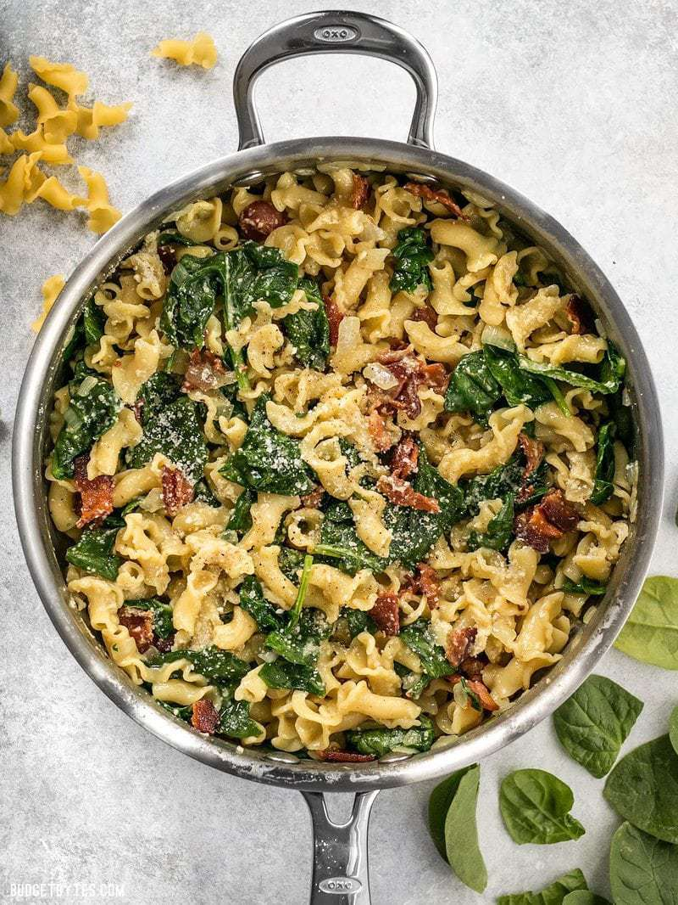

Bacon Pasta Recipe
Home
Bacon pasta is a wonderful and tasty week night meal. Simple and easy.

Ingredients
- 6 oz. Bacon
- 1 Yellow Onion
- 2 Cups Chicken Broth
- 1/2 lb. Pasta of choice
- 1/4 lb. Spinach
- 1/3 cup Grated Parmesean
Recipe
- Cut the bacon across the strips into one-inch pieces. Sauté the bacon in a large skillet until it is brown and crispy (no extra fat needed). Remove the browned bacon to a bowl with a slotted spoon. Carefully pour the fat off into a separate bowl, leaving about one tablespoon in the skillet.
- While the bacon cooks, dice the onion. Once the bacon is removed and the fat is drained from the skillet, add the diced onions and sauté until they are soft and transparent. Allow the moisture from the onions to dissolve some of the browned bits off of the bottom of the skillet.
- Add two cups of chicken broth to the skillet and dissolve off any remaining browned bits of bacon drippings from the bottom of the skillet.
- Finally, add the uncooked pasta to the skillet, place a lid on top, and let the skillet come to a boil over high heat. Once it reaches a boil, give it a quick stir, turn the heat down to low, and let simmer for 10 minutes with the lid in place. Give the skillet a stir to loosen the pasta from the bottom every few minutes or so, replacing the lid quickly each time. After 10 minutes the pasta should be tender and most of the broth absorbed. There should be a little bit of thick, saucy broth remaining in the bottom of the skillet.
- Add the fresh spinach to the skillet and stir until it has wilted into the pasta. Turn off the heat, add the cooked bacon back to the skillet, sprinkle the Parmesan over top, stir to combine, and then serve.